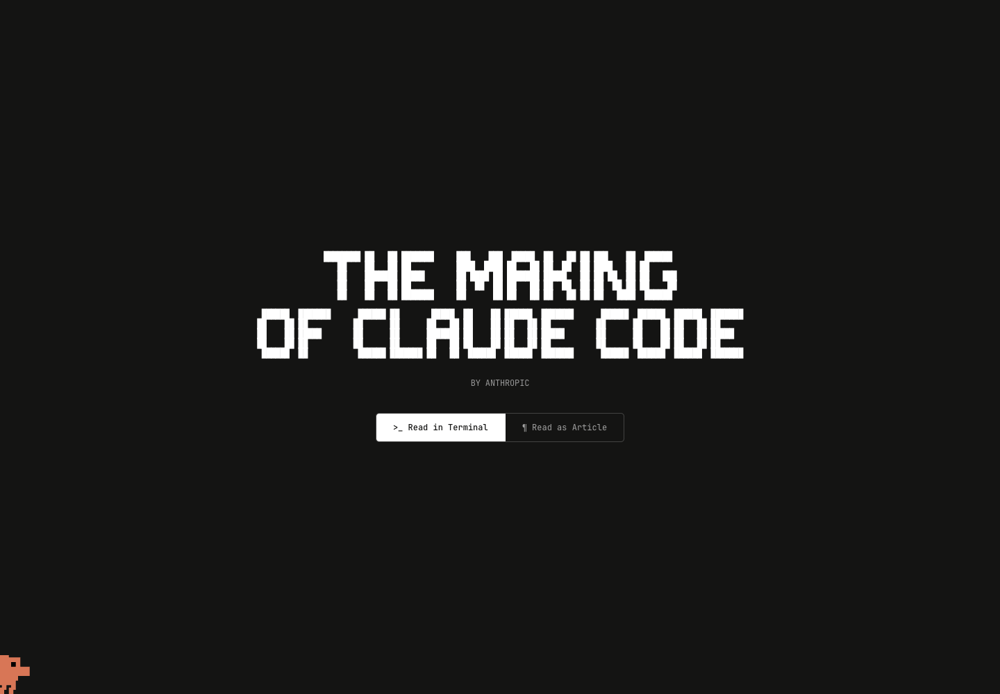
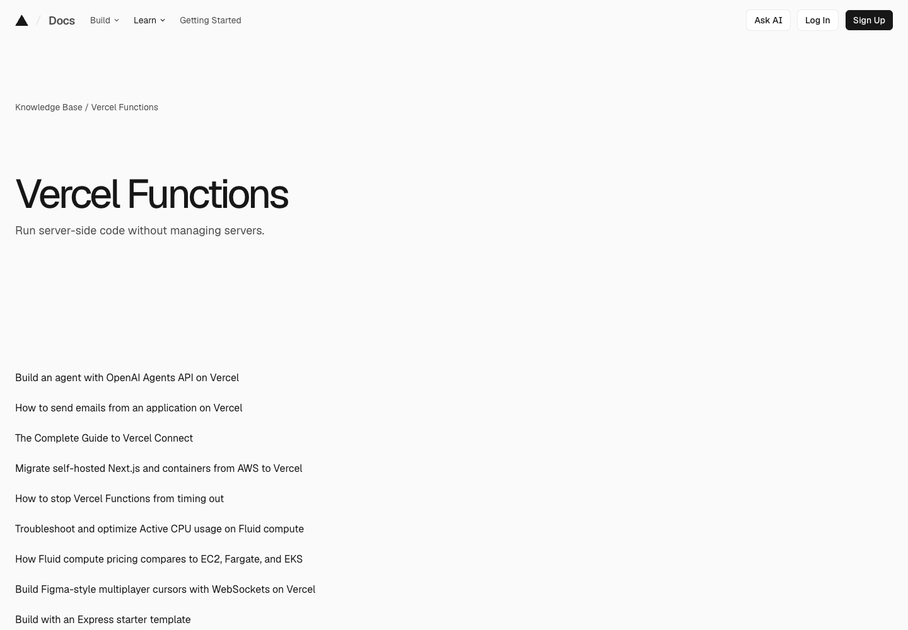
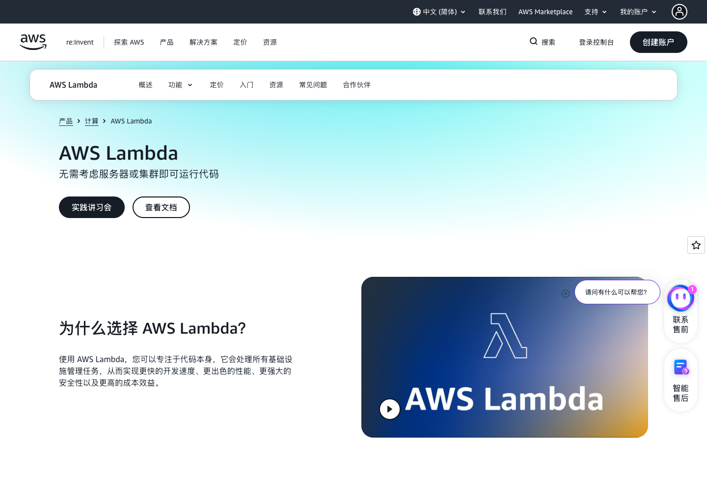

AGENT SYSTEMS · 2026-09-21
模型能力指数增长，企业却还是线性：因为少了两层系统
我之前写过一篇 Harness。当时我的结论是：Prompt 解决说法，Context 解决信息，Harness 解决行为。后来我发现，这个结论其实只说了一半。
Harness 解决的是：怎么让一个 Agent 把事情做对。但企业真正难的还有下一层。一个 Agent 已经在我本地 Claude Code 里做对了，怎么把它快速复制到 production，变成 10 个、100 个、1000 个 worker？
这可能才是为什么模型能力在指数增长，企业效率却还在缓慢爬坡。中间真正缺的，不是“再换一个聪明一点的模型”，而是两层系统。
第一层让任务稳定做对。
第二层把“做对”复制到 production。
Layer 01Done Right：先把“什么叫做对”拆开
现在很多 Agent 架构其实很像：找一个便宜模型，让它自己理解任务、自己执行、自己检查，错了就 retry。听起来省钱，但这跟考试时让同一个学生自己出题、自己答题、最后再自己判卷差不多。最危险的不是它答错，而是它能非常自洽地认为自己答对了。
我现在更喜欢把一个 todo 拆成三个角色：
Advisor
最强模型先看完整上下文，定义 acceptance criteria，决定“什么叫做对”，同时给任务预算。
Executor
便宜模型只拿任务、工具和执行边界，真正改代码、跑命令、查资料、产出结果。
Checker
上下文隔离，只看目标、验收标准和真实 evidence，然后给 PASS / FAIL。

所以我现在不太关心 cost per token，我更关心 cost per accepted task。
便宜模型一次调用当然便宜。但如果它 retry 5 次，中间打断人 3 次，最后还要工程师重新检查，那它一点都不便宜。预算应该是 todo 的一部分：值得用什么模型？最多允许几次 retry？什么时候升级？什么时候并行跑几个解，再让 Checker 选？
这不是“怎么省模型钱”，而是怎么用最少的钱，买到一个真正通过验收的结果。
Layer 02Ship to Production：一次做对，不等于企业能力
假设今天 Claude Code 在我的 Mac 上，真的把一个任务做得特别好。Prompt、Skills、Tools、Harness、Evals 都配好了。但每次还得我打开电脑、开 terminal、把任务贴进去、盯着它跑、手动看结果，那它仍然只是一个很好用的 prototype。
企业真正需要的是把“这一次做对”变成一个可复制单元。
然后下面再接一个 runtime：任务进入 Queue，启动隔离 Worker，执行，自动验收，失败时重试或升级模型，保存 evidence，完成后销毁。这样本地一个成功的 Agent，才有机会变成云端 10 个、100 个、1000 个遵守同一 contract 的 worker。


这很像 Cloud Computing。CPU 越来越快，不等于你自动拥有一个能服务一亿用户的互联网公司。中间还需要虚拟化、调度、部署、监控、权限、存储和故障恢复。
模型也一样。Model 是新的 CPU。Harness + Runtime，才更像 Agent 时代的 Cloud Layer。
Model Intelligence × Reliability × Replication
模型能力可以指数上涨。但如果 Reliability 很低，每个任务都要人盯；或者 Replication 很低，一个做对的 Agent 只能活在某个人的电脑里，那企业得到的增长当然还是线性的。
所以真正缺的可能不是下一个更强的模型，而是两个东西：Harness，让它稳定做对；Runtime，把“做对”复制到 production。
上一次我写：Prompt 解决说法，Context 解决信息，Harness 解决行为。现在我想再补一句：Runtime 解决规模。